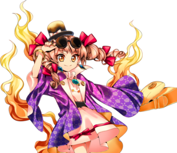
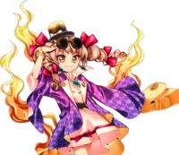

- Welcome to Touhou Wiki!
- Please register to edit. For assistance, check in with our Discord server or IRC channel.
Joon Yorigami
Joon Yorigami Jyoon Yorigami | |
|---|---|
|
 | |
| Species |
Pestilence God |
| Abilities |
Causing consumption of financial assets |
| Occupation |
Con artist, spending money |
Music Themes | |
| |
Appearances | |
| Official Games | |
| |
| Print Works | |
| |
Joon Yorigami (依神 女苑 Yorigami Joon) is a pestilence god and one of the main antagonists of Antinomy of Common Flowers. Together with her older sister, Shion, she robs innocent residents of Gensokyo of their wealth by bringing them financial ruin.
General Information[edit]
Personality[edit]
Joon is a remorseless thief who has no issue with using her ability to rob anybody and everybody of their wealth, having no concern at all for their wellbeing. She doesn't even care much for her own older sister, using her as a tool and belittling her. She takes pride and finds satisfaction in being called one of Gensokyo's most hated residents. She's a spendthrift who can never maintain her wealth as she's always making impulsive and extravagant purchases. She's also incredibly wasteful, and can be seen throwing away money and valuables in many of her attacks. She does, however, change slightly after the events of Antinomy of Common Flowers - due to her training at the Myouren Temple, she starts limiting herself to only stealing money from those who can afford losing a chunk of their wealth.
Abilities[edit]
Joon is a pestilence god who brings misfortune to others. She's capable of completely draining a person's financial assets - those around her think that spending money will bring them happiness, and thus use it up as if offering it of their own free will. An example of this ability can be seen in Curiosities of Lotus Asia, where she uses it on Sumireko Usami.[1]
Background Information[edit]
Name and Origin[edit]
Her full name is Joon Yorigami (依神 女苑). Joon (女苑) comes from himejoon (姫女菀), the Japanese word for the daisy fleabane.[2] The daisy fleabane is related to the Philadelphia fleabane, which in Japanese is called harujion (春紫菀), which is likely what her sister Shion is named after. Her family name Yorigami is composed of the kanji 依, which means "reliant" or "dependent", and 神, which means "god". The first kanji is also present in the term hyoui (憑依) meaning "possession", so it is possible that Yorigami could mean "possession god".
Joon was originally intended to be a single character with an Urban Legend taking on a human form. This concept ended up changing as Antinomy of Common Flowers' development went along, turning into a pair of misfortune-bringing gods.[2]
Design[edit]
In Antinomy of Common Flowers Joon has orange eyes and long light-brown hair in the shape of two curly drills with red ribbons tied in them.
Her clothing consists of a purple wide-sleeved coat with a rose motif, a short light-pink dress with a red ribbon under it held by a black belt, brown boots, round sunglasses, and a mini top hat. She also carries a golden Chanel bag.[3] Befitting her ability of making others give their money away and her compulsive spending habits, she sports a great variety of expensive-looking accessories like golden rings, a golden necklace, golden earrings, and golden bracelets, most of which also has gems in it. Some of her in-game portraits and animations also show her holding a feathered fan.
Both her game art and her sprite show Joon being followed by something that appear to be flames.
Story[edit]
Games[edit]
- Urban Legend in Limbo
Reisen's Extra story shows the beginning of the Perfect Possession incident, which was caused by Joon and Shion.
- Antinomy of Common Flowers
Joon, with the help of Shion, starts the events of Antinomy of Common Flowers through using Perfect Possession. Initially, they are thought to be unbeatable due to Shion's misfortune-bringing ability being brought upon their enemies by Joon switching her with the opponent's slave. Eventually, they are defeated by Reimu Hakurei and Yukari Yakumo, who manipulated the border between master and slave to prevent Joon from taking control of Reimu's body. Joon is then taken to the Myouren Temple for training as punishment.
Later, Yukari orders Joon and Shion to capture every Dream World dweller that's still in Gensokyo.
Relationships[edit]
Shion is Joon's older sister. Although Shion was fundamental for Joon's scheme during the events of Antinomy of Common Flowers, she seems to not hold Shion in high regard, as she often berates her and heavily insults her as soon as they get cornered, calling her a "gloomy, poor, smelly, miser who can't do anything on her own", and saying how there isn't anything good about her. Their relationship appears to somewhat improve, however, as Joon is much kinder to her sister in their scenario.
Minor Relationships[edit]
After Joon is defeated by Reimu and Yukari, Byakuren takes her under her wing to teach her a simpler lifestyle.
Gallery[edit]
Joon's portrait from Antinomy of Common Flowers, showing her full attire
Joon's pre-battle portrait from Antinomy of Common Flowers
Joon's different color palettes from Antinomy of Common Flowers, the last two were added in v1.10
Skills[edit]
Spell Cards[edit]
| Name | Translated | Comments | Games | Stage | ||
|---|---|---|---|---|---|---|
| Total: 7 | ||||||
| 憑依剝奪「スレイブロバー」 | Possession Stripping "Slave Robber" | AoCF | Use | |||
| 貧符「超貧乏玉」 | Poor Sign "Super Poverty Bomb" [4] | AoCF | Use | |||
| 「クイーンオブバブル」 | "Queen of Bubble" | AoCF | Use | |||
| 「80'sのエクストーショナー」 | "Extortioner of the 80's" | AoCF | Use-LW | |||
| 不運「ようこそ極貧の世界へ」 | Bad Luck "Welcome to the World of Destitution" | Co-owner with Shion | AoCF | Story | ||
| 財禍「プラックピジョン」 | Financial Ruin "Pluck Pigeon" | Co-owner with Shion | AoCF | Story | ||
| 憑依交換「アブソリュートルーザー」 | Possession Exchange "Absolute Loser" | Co-owner with Shion | AoCF | Story | ||
Official Profiles[edit]
|  | ○最凶最悪の双子の妹 依神 女苑 種族：疫病神
言葉巧みに対象に取り憑き、自分の意思で貢ぐように財産を使わせてしまう。 そして吸い取る財産が無くなると、また別の人間を求めて彷徨うという。 今回、姉を道具のように使って『絶対に負けない作戦』を思いつく。 |
The Most Despicable and Disastrous Younger Twin Sister Joon Yorigami Species: Pestilence god
She takes hold of her targets with her fast talk, then makes them use up their money as if they're offering it of their own free will. Then, when there's no more money left to drain, it's said that she wanders off in search of another human. This time around, she came up with "a plan where they'd be guaranteed not to lose," using her elder sister like a tool. |
Official Sources[edit]
References[edit]
- ↑ Curiosities of Lotus Asia/Chapter 32
- ↑ 2.0 2.1 Strange Creators of Outer World 2018 Spring! - Antinomy of Common Flower Interview with ZUN and Iruka Unabara
- ↑ Touhou 15.5 Manual
- ↑ Parody of the Super Spirit Bomb (超元気玉) from Dragon Ball.
| This page is part of Project Characters, a Touhou Wiki project that aims to write proper descriptions for all official characters of Touhou Project. Please keep the character page guidelines in mind when contributing. |